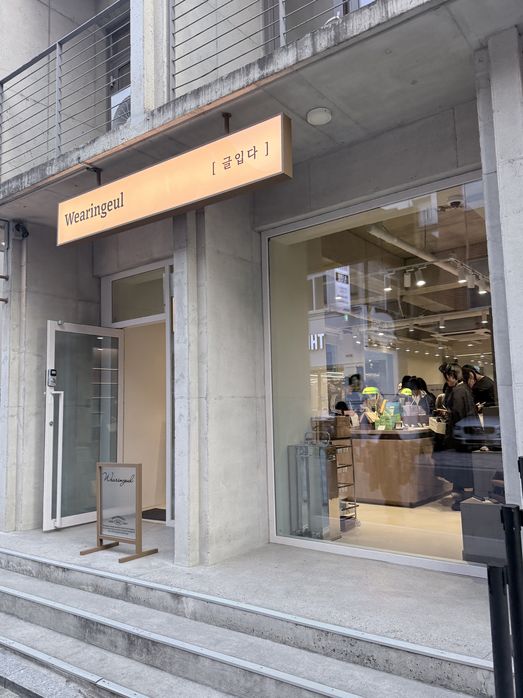
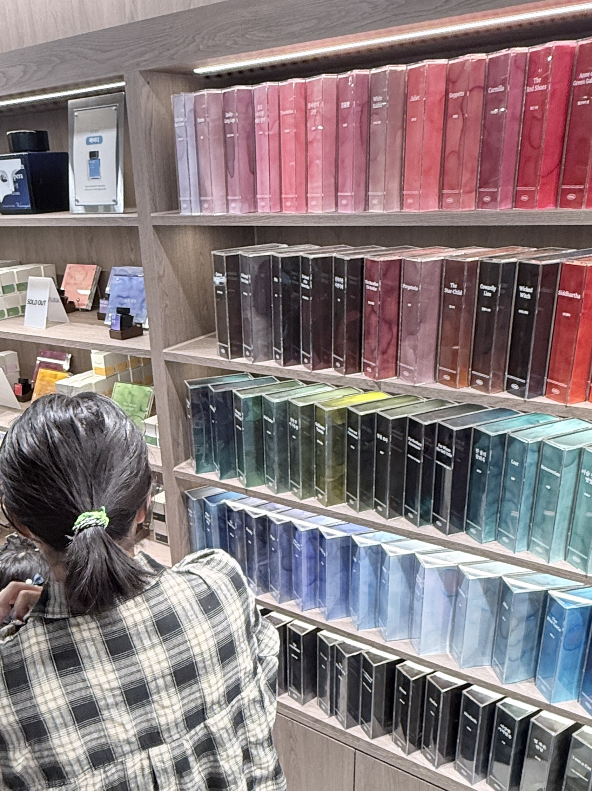
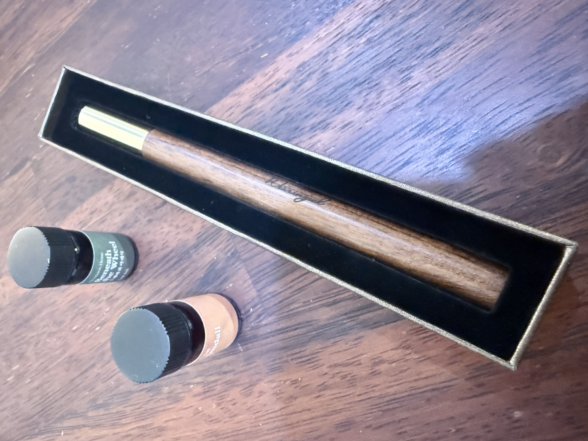
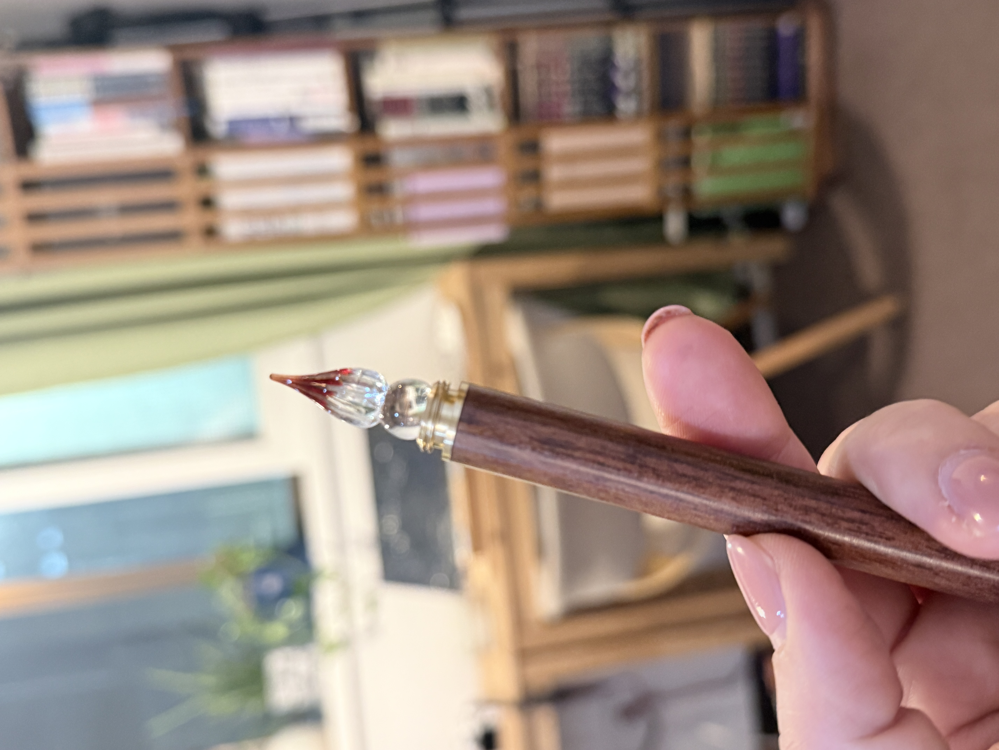

둘이 만드는 이야기

다이어리가 좋아하는 ‘문학 잉크’ 프로젝트를 진행하는 ‘글입다’의 오프라인 매장에 다녀왔어요.

150가지가 넘는 잉크 색을 구경하느라 눈이 즐거웠어요.

펜촉에 잉크를 찍어 글을 쓰는 낭만을 즐기는 다이어리가 브리또에게 새로운 세계를 열어 주었네요.
브리또는 고민 끝에 펜과 잉크를 구매했어요. 잉크를 고르는 시간은 고민스러웠지만, 그만큼 행복했어요.

인투뎀으로 돌아와 펜촉에 잉크를 찍어 글씨를 써 봤어요. 꺄! 여러분도 한 번 해 보세요.